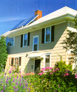
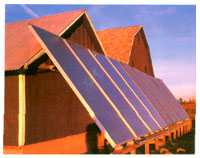

Save With Solar Hot Water
October/November 2003
Slash your hot water heating costs.
By Greg Pahl
Hot water heating is one of the most efficient and cost-effective ways of harnessing solar energy. According to the Department of Energy's Office of Energy Efficiency and Renewable Energy, hot water heating accounts for one-fifth to one-quarter of an average U.S. household's energy usage. Installing a solar domestic hot water system can reduce your hot water heating bill by 60 percent to 95 percent, potentially saving you hundreds of dollars a year. Invest in a solar hot water system for $3,000 to $6,000 and, in some cases, you might recoup the costs within only four to six years.
"If someone is really interested in renewable energy, and they want to get involved somewhere, a solar hot water system is probably the best place to start," says Rod Hyatt, owner of In Hot Water Heat & Power in Eden, Utah. "It makes the biggest impact at the lowest investment." Many states, municipalities and some local utilities now offer tax incen tives; and rebates, significantly sweetening the solar deal.
Fueled by the sun (think free energy!), instead of fossil fuels, solar hot water systems emit none of the pollutants and greenhouse gases-carbon dioxide, nitrous oxides, sulfur oxides-produced when natural gas or oil is burned. And solar hot water systems can be used wherever the sun shines. (Of course, generally the sunnier your location, the more hot water you'll reap.)
HOT HOUSEHOLD WATER
I n most homes, domestic hot water (water for washing dishes and clothes, for bathing or cooking) usually is provided by an electric or gas-fired water heater, or boiler or furnace that also heats the home. Heating water with electricity is expensive and will become even more costly as the price of fossil fuels used to generate it continues to climb. And, although heating water with gas is less expensive than heating with electricity, burning gas still contributes to pollution and global warming.
In concert with an electric or gas-fired backup unit, solar domestic hot water can reduce the requirement for conventional water heating by two-thirds or more. The total amount the solar hot water system can contribute depends on your household's hot water consumption, and the amount of sunshine the collectors receive daily and throughout the year. In general, most solar systems are designed to meet one-half to three-quarters of a family's domestic hot water need. During the summertime, the system may usually meet all of their hot water needs. On average, an efficient collector in good weather will heat between 1 and 2 gallons of water per square foot per day. (A solar contractor can help you correctly size the collectors, storage tank and backup system.)
SMART SOLAR SHOPPING
If you're haunted by horror stories of the 70s and '80s, when fly-by-night installers, more interested in selling tax credits than reliable systems, left unwitting homeowners with poorly designed, difficult-to-maintain systems-it's time to shed those fears. Today, performance standards govern most active solar components, making comparisons between products possible (see Sources, Page 80), so when you shop, you can shop smart. Most manufacturers warrant their systems for at least 10 years; in many cases, the collectors and insulated piping may last as long as your house. Since it tends to degrade over time, the circulating fluid should be inspected every few years by a qualified technician.
SYSTEM COMPONENTS
Solar hot water systems consist of collectors connected to one or more storage tanks by piping. For active systems, pumps, sensors and controllers may be added.
Flat-plate, evacuated-tube and batch collectors are all common collectors; each is suited to different needs. Flat-plate collectors (see illustration at right), with a "black chrome" or a similar selective-surface coating, which absorbs the maximum amount of solar heat while minimizing radiant cooling, are the most common. Small tubes inside an insulated aluminum box with a tempered glass face contain either potable water or a heat-transfer fluid; the collector absorbs and transfers heat energy to the fluid in the tubes, which is then carried to the heat storage tank by insulated piping.
Evacuated-tube collectors use rows of parallel, transparent glass tubes, which are coated with a selective finish. A vacuum inside the tubes helps the collectors achieve temperatures between 170 and 350 degrees, which makes evacuated tube collectors ideal for high temperature water applications. Batch collectors are simple systems that use one or more black-painted tanks enclosed in a well-insulated, glass-topped box. In this design, the collector and storage tank are combined.
Flat-plate collectors generally perform most consistently for residential applications, yielding temperatures in a range of 140 to 160 degrees. Thermal performance ratings can be used to compare the efficiency and economics of various flat-plate solar collectors (see Sources, Page 80).
To maximize their efficiency, collectors need unobstructed southern solar exposure between the hours of 9 a.m. and 3 p.m., so site them accordingly. The collectors can be mounted on a building's roof or walls or set on a frame on the ground.
TYPES OF SYSTEMS
Water heated by the collectors may be moved through the house with pumps (active systems) or by natural convection (passive systems). Batch and passive open-loop systems (which use natural convection to circulate fluid) require little maintenance but are vulnerable to freezing. More common active systems that use pumps and sensors to regulate fluid flow are generally more efficient and freeze-resistant, but require more maintenance.
In a direct or open-loop active system, a pump (regulated by an electronic controller, an appliance timer or photovoltaic panel) circulates heated domestic water throughout the entire system, from the collectors to the heat-storage tanks. With fewer components and no heat exchanger to lose heat, direct active systems tend to be more efficient. They can be powered by photovoltaic modules or a simple AC pump and controller. However, because these systems circulate water instead of antifreeze, they are vulnerable to freezing and are not recommended in climates that experience freezing temperatures.
Indirect or closed-loop active systems are the most freeze-resistant. They circulate a heat-transfer fluid (most commonly a nontoxic propylene glycol and water mixture) that transfers heat from the collectors to potable water held in storage tanks (the antifreeze also keeps the collectors and exterior piping from freezing). Like direct active systems, they can be powered by photovoltaics, too. They have more components and are more complex.
In cold climates where freezing is a concern, solar contractor Tom Lane, owner of Energy Conservation Services of North Florida, Inc. in Gainsville. Florida. recommends consumers choose from one of two closed-loop, active systems: unpressurized drainback systems or pressurized glycol systems.
"The most important criteria for both is that they won't freeze and burst."
An unpressurized drainback system uses a closed- loop of unpressurized water separate from domestic pressurized water. When solar heat can be collected, a differential control, which measures the difference in temperature between two sensors and turns equipment on and off, turns the AC circulating pump on, and water circulates through the solar collectors. When the pump stops, the collectors and pipes drain automatically into a drainback tank. Hot water from the drainback tank is pumped through a heat exchanger located in (or sometimes outside) the main potable water storage tank. Almost all drainback systems use a differential control and sensors to automatically drain the water from the collector when the temperature drops to freezing. In very cold climates, a propylene glycol solution can be added to the unpressurized solar loop for added freeze protection. Drainback systems typically have the least maintenance and are the highest performing, closedloop solar hot water systems available.
Closed-loop glycol systems are the preferred option for extremely cold climates, but can be installed anywhere. Instead of using a drainback system, closed-loop, pressurized glycol systems rely on a continuous supply of antifreeze that remains in the pipes and collector. whether the circulating pump is operating or not. Closedloop glycol systems often rely on a differential controller, sensors and an AC pump. A small PV panel can be used to operate a DC circulating pump, which runs while the sun shines and automatically shuts itself off when night falls or cloudy weather prevails.
Double-walled heat exchangers prevent contamination of household water with antifreeze or other heat-exchange fluids. Heat exchangers can be mounted outside the storage tank or located inside the tank. Because antifreeze tends to degrade over time, however, these systems need regular inspections to ensure that the antifreeze solution is still viable.
Whatever system you choose, locate the storage tank (and if practical, the collectors) as close as possible to the household distribution and backup system to minimize heat loss from the pipes, and insulate the pipes well.
REAL LIFE APPLICATIONS
Jay Mead and his wife, Edie Farwell, recently installed a closed-loop glycol solar hot water system in their home in Hartland, Vermont. "We live in an environmentally based cohousing community that has a centralized wood-fired boiler for all the units," he says, "and we wanted to have some kind of non-fossil-fueled augmentation for the boiler." A solar hot water system seemed like an obvious choice.
So far, their solar domestic hot water system has performed flawlessly. "It's really quite amazing," Mead says. "On a cold winter day, when the temperature outside is around zero, the temperature of the tank registers between 130 and 150 degrees. We've been very impressed." The system's operation is so subtle that Mead says the only way he can tell that it's running is the faint sound of the circulating pump.
Val Roberts and his wife, Rosalie, retired recently to a remote home in Bancroft, Idaho, where winter temperatures of 40 degrees below zero are not unusual. But Roberts didn't hesitate to install a solar hot water system. The glycol in the solar system offers freeze protection down to 50 below zero.
Besides offsetting a substantial portion of their domestic hot water needs, the system provides some space heating. "There are days when we get water as hot as 200 degrees out of the solar panels, and we can heat the water tanks up to 180 degrees, which act as a heat sink for the times when the sun isn't shining," he says. The Roberts have a valve on their domestic hot water line so they don't get scalded. "We're very satisfied with the system," he says. "We would definitely recommend it to other homeowners."
Since 1979, more than 16,000 solar hot water heaters have been installed in Oregon-certainly not the sunniest spot in the country!-for domestic hot water, swimming pools and spas (and many of those early systems are still working). A typical solar hot water heater there provides between 50 percent and 60 percent of a home's water heating needs. Oregon currently offers a residential energy tax credit (based on the system's performance) of up to $1,500 on certified systems. Linking tax credits or other incentives to system performance is an important new strategy to minimize tax credit abuses, and has widespread support in the solar industry.
THE FUTURE OF SOLAR
If solar hot water systems are so popular with their owners, even with those who live in extreme climates, why aren't they found in more homes across the United States?
The problem isn't technical, Lane says; the technology is time-tested and works well. Part of the problem is the need to rebuild the industry's support infrastructure and to strengthen educational and promotional efforts. The other part is political.
"We could sure use more vocal support from our politicians," Lane says. "It would be extremely helpful if they would encourage people to adopt solar energy."
Nevertheless, he is optimistic about the future of solar hot water. "It's the best product the solar industry has to offer, and it's going to grow in the future," he says. "It's affordable, and from an environmental standpoint, it's the responsible thing to do."
Sources for Solar Domestic Hot Water Systems
A merican Solar Energy Society (ASES)
(303)443-3130
www.ases.org
The ASES can help you find solar contractors and suppliers in your area. They also publish Solar Today magazine, which often has articles on solar hot water systems.
The Database of State Incentives for Renewable Energy (DSIRE)
www.dsireusa.org
A comprehensive Web-based source of information on state, local, utility and selected federal incentives that promote renewable energy, including tax credits, sales and property tax exemptions, rebates and loans.
Florida Solar Energy Center
(321) 638-1000 (F SEC)
www.fsec.ucf.edu
Hosts the Solar Rating and Certification Corporation (SRCC), a nonprofit organization with the primary purpose of developing and implementing certification programs and national rating standards for solar energy equipment.
Solar Energy Industries Association (SEIA)
(202) 628-7745
www.seia.org
Solar contractors and suppliers can be located through the SEIA Web site.
Tom Lane, Energy Conservation Services of North Florida, Inc.
(352) 377-8866
www.ecs-solar.com
Offers a comprehensive, spiralbound book, Solar Hot Water Systems: Lessons Learned, 1977 to Today , available in a black and white edition for homeowners ($35), and a color edition for contractors ($55).
|
 Solar doesn't have to be unsightly: At Inn Serendipity , a bed-and-breakfast in Browntown, Wisconsin, three 4-by-8-foot flat-plate collectors sit comfortably on the south-facing rooftop. They provide up to 70 percent of the home's domestic hot water needs. |
Solar hot water systems can be used wherever the sun shines, although their efficiency depends on the amount of solar energy received. |
Courtesy US Department of Energy |
 The solar collectors on this home, owned by Aspen, Colorado's Community Office of Resource Efficiency, provide more than half of its domestic hot water. |
 Ten 4-by-10-foot flat-plate collectors heat a straw bale greenhouse at Inn Serendipity in Browntown, Wisconsin. The panels provide 240,000 BTUs of heat each day, heating 700 gallons of water contained in storage tanks. Coupled with R-43 straw bale walls, the solar hot water heating system keeps the greenhouse toasty warm, even in the depths of a Midwestern winter. |
Active, closed-loop solar hot water systems use a heat- transfer fluid, like antifreeze, to absorb heat. Pipes carry the warmed fluid to the storage tank, where a double- walled heat exchanger allows the transfer of the heat from the fluid to the stored domestic water. |